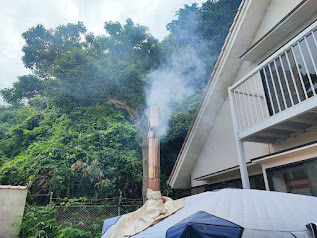
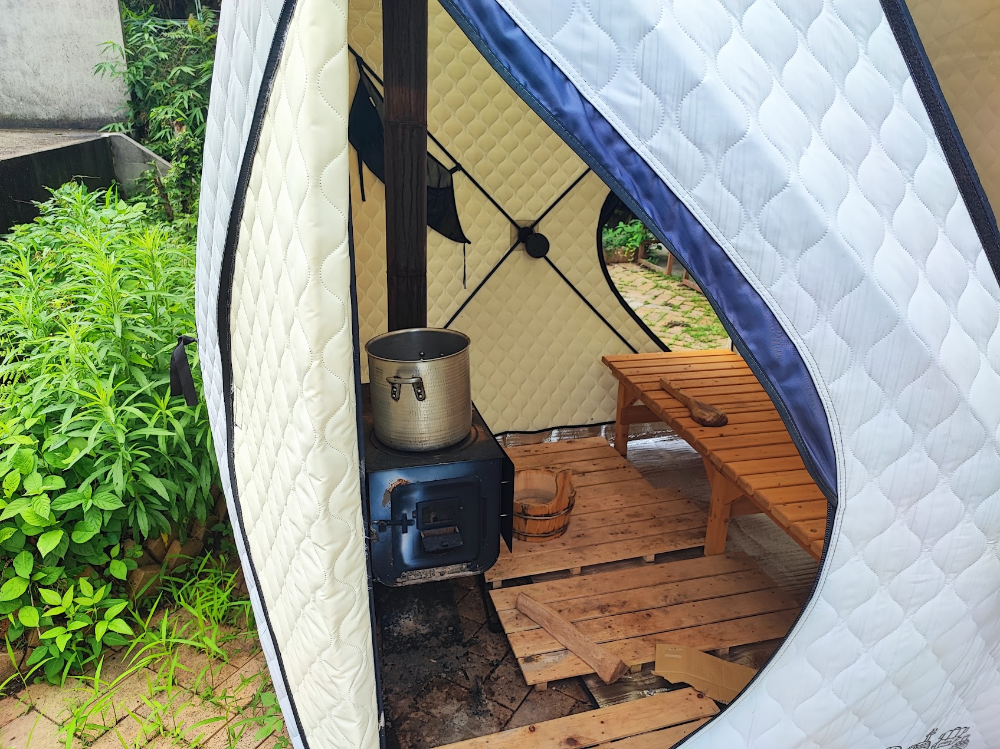
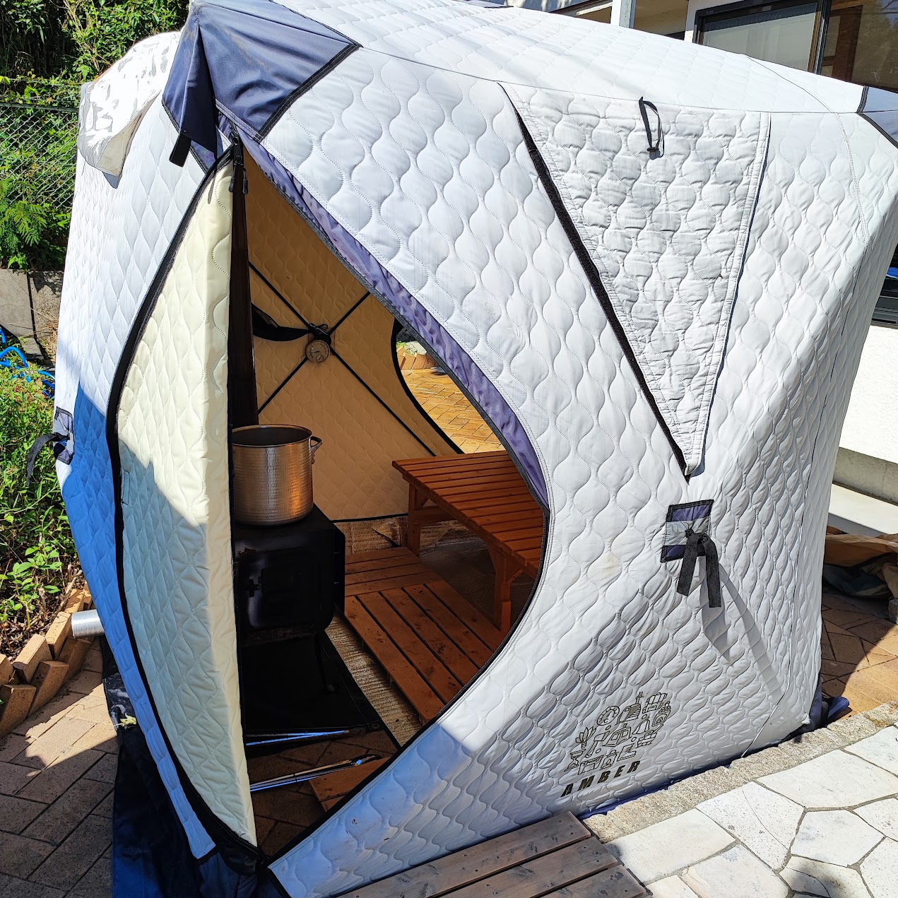

白庭台の別荘で弟とテントサウナ、100度超えで完璧にととのった話
白庭台の別荘で、弟とテントサウナをやってきました。庭先に薪ストーブ式のテントサウナを設営し、火を焚いてじっくり温めるスタイルです。

薪をくべて温度上昇
薪ストーブに火を入れると、テント内はみるみる温度が上がっていきます。ストーブの上には大きな鍋を置いてロウリュ用のお湯も準備。木の香りと蒸気の匂いが漂う中、じっくりと汗をかく準備が整いました。

100度超えで完璧にととのった
今回はストーブの火力を上げて、テント内は100度を超える本格的な熱さに。弟と交代で外気浴を挟みながら、しっかりと「ととのう」感覚を味わえました。自然の中で本格的なサウナ体験ができるのは、別荘ならではの贅沢です。

また兄弟でやりたい
火加減を見ながら弟と過ごす時間はそれ自体が楽しく、いい思い出になりました。次はもっと大人数を誘って、テントサウナを囲む会をやってみたいと思います。